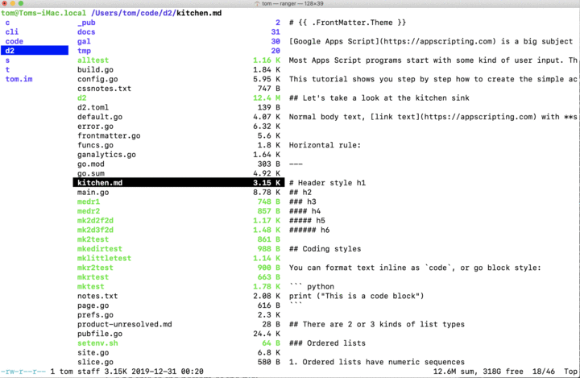

Installing the Ranger file manager on MacOS under Bash

An insanely fast file manager/viewer with Vim key bindings? Sign me up for Ranger! Problem is, I'm not used to installing these character-mode thingies from source on MacOS. Here are my notes on how to get that job done.
Executive summary
- Use Python to install the Pip package manager. Obviously, skip this step if you already have Pip installed.
- Add Python and Pip to the path
- Use Pip to install Ranger
- Finally, sit back and have your socks blasted right off your feet by Ranger's speed
I assume you have a recent version of MacOS, which has an acceptable version of Python on it, though you'll get grumblings that's not the case.
Installing Pip
Yes, I know, this is elementary stuff. Hey, I didn't have these steps memorized. I'm a Go programmer, not a Python guru!
Pip is the Python package manager. To install it, drop to the Terminal and run this command:
curl https://bootstrap.pypa.io/get-pip.py -o ~/Downloads/get-pip.py
Curl is technically a web browser, but instead of rendering the HTML graphically it makes a copy of the web page as a file. The command above gets a copy of the Python source for Pip and copies it into your MacOS Downloads directory.
- Change to the Downloads directory:
cd ~/Downloads
Install Pip using Python
- Run Python on the
get-pip.pyprogram to install Pip:
python ~/Downloads/get-pip.py --user
Pip warns darkly that Python 2.7 has a limited lifespan. You'll see something like this:
DEPRECATION: Python 2.7 will reach the end of its life on January 1st, 2020. Please upgrade your Python as Python 2.7 won't be maintained after that date. A future version of pip will drop support for Python 2.7. More details about Python 2 support in pip, can be found at https://pip.pypa.io/en/latest/development/release-process/#python-2-support
Collecting pip
Downloading https://files.pythonhosted.org/packages/00/b6/9cfa56b4081ad13874b0c6f96af8ce16cfbc1cb06bedf8e9164ce5551ec1/pip-19.3.1-py2.py3-none-any.whl (1.4MB)
|████████████████████████████████| 1.4MB 454kB/s
Installing collected packages: pip
WARNING: The scripts pip, pip2 and pip2.7 are installed in '/Users/tom/Library/Python/2.7/bin' which is not on PATH.
Consider adding this directory to PATH or, if you prefer to suppress this warning, use --no-warn-script-location.
Successfully installed pip-19.3.1
Add Python and Pip to the path
Let's get this on the path so you can just type ranger to start Ranger when the time comes.
We'll do this by making sure you can run Python scripts like an executable, without
having to precede the name with python. That means appending the Pythong directory
to your PATH environment variable.
On MacOS you do this on ~/.bash_profile instead of ~/.bashrc, so this
differs from the Ranger docs.
Edit ~/.bash_profile
- Fire up your favorite editor and load
~/.bash_profile. Here's an example using Vim:
vim ~/.bash_profile
- Add this to the bottom of the file:
export PATH="$PATH:~/Library/Python/2.7/bin"
Run source to export those changes into your current environment
Normally the change you just made wouldn't be available unless you exited Terminal and opened up a new instance.
- Save some time by running
sourceon the Bash profile you just created:
source ~/.bashrc
Now Pip will be available from the command line.
Install Ranger
Finally, we can install Ranger itself:
pip install ranger-fm --user
And now you can run it from the command line anywhere on your system:
ranger